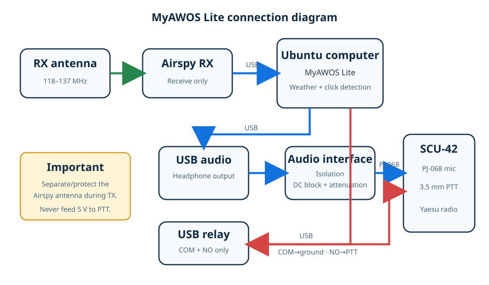

A smaller MyAWOS
Listen
An Airspy receiver detects five microphone clicks on the configured frequency.
Observe
Current WeatherLink Live or Ecowitt measurements are converted into a spoken report.
Transmit
A dry-contact USB relay keys a separate Yaesu radio while isolated audio is played.
Recover
PTT releases, the Airspy restarts, and noise calibration runs again automatically.
Connections

Simple Ubuntu installation
sudo apt install ./myawos-lite_0.1.0_all.deb sudo myawos-lite setup sudo myawos-lite doctor
Every installation starts with automatic transmission disabled. Audio and relay-OFF checks can be completed without keying the radio.
Purposefully limited
Lite focuses on the dependable core: Airspy RX, five-click detection, weather retrieval, recorded voice, USB-relay PTT, and audio playback. It excludes camera, email, cloud modeling, SDR transmission, GPIO and display features.